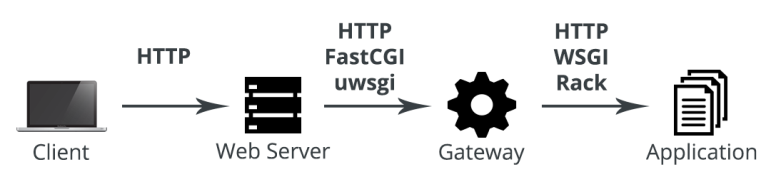

Servers for Hackers
Table of Contents
1 Security
1.1 Users and Access
Providers purchase IP addresses in blocks. Finding the ranges of IP addresses used by a hosting provider is not difficult. Automated bots may scan for vulnerabilities open on the server.
Think of servers as disposable or prone to fail is always a pertinent thing to do. Backup important files, configurations and data somewhere else. Amazon AWS's S3 service is an excellent, cheap place to put backups.
1.2 Iptables
iptables -N LOGGING iptables -D INPUT -j DROP # 删除当前默认目标 iptables -A INPUT -j LOGGING # 将默认目标指向新的规则链 # 加入记录日志的规则，默认记录到内核日志 /var/log/kern.log iptables -A LOGGING -m limit --limit 2/min -j LOG --log-prefix "IPTables Packet Dropped: " --log-level 7 iptables -A LOGGING -j DROP # 记录日志之后丢弃数据包
2 Permissions and User Management
2.1 Running Processes
Processes (programs) are run as specific users and groups. Therefore we can regulate what processes can do using file and directory permissions.
Core processes which need system access are often run as user root, but then spawn processes as other users. This "downgrading" of privileges is used for security. For example, Apache is started as user root. The master process then downgrades spawned processes to less privileged users.
3 Web Servers
3.1 HTTP, Web Servers and Web Sites
A web server can handle serving more than one web site. Web server reads the HTTP request's Host header and routes incoming requests to the correct web site. If the Host header is not present or doesn't match a defined site, the web server routes the request to a default site.
$ curl -I 127.0.0.1 # Send request without Host header HTTP/1.1 301 Moved Permanently # Nginx sends 301 redirection ... # Some web servers serve default site directly Location: http://foo.com/ # Default site $ curl -I -H "Host: foo.com" 127.0.0.1 # Send with Host header HTTP/1.1 200 OK ...
3.2 DNS and Hosts File
When purchasing a domain from a registrar, it often also needs to add domain name servers for the domain. Many registrars setup their own domain name services. But domain name information can also be controlled on other services: AWS Route 53, CloudFlare CDN etc.
It is recommended to not use DNS provided by hosting, in case the DNS servers of cloud server providers be attacked. Using a separate DNS service is an easy way to not put eggs all in one basket.
DNS records need to be added to point the domain names to web servers.
3.3 Hosting Web Applications
| Application | Accept requests from gateway |
|---|---|
| Return valid responses | |
| Gateway | Accept requests from web server |
| Translate requests for application | |
| Web Server | Accept HTTP requests |
| Translate requests to protocols gateway listen for |

3.3.1 Applications and HTTP Interfaces
Most languages are either general purpose or do not concentrate on the web. They have a process of translating an HTTP request (the bytes constituting HTTP request data) into code. Libraries called HTTP interfaces are used to handle and translate HTTP requests for application code. HTTP interface also standardizes and encapsulates HTTP concerns. Newer languages include HTTP interfaces as part of standard library.
- Python uses WSGI to specify an interface between web servers and Python applications.
- PHP uses cURL and Guzzle package to accept web requests.
- NodeJS and Golang can handle HTTP requests directly.
- PHP
PHP is unique in that it's a language built specifically for the web, it was built under the assumption that it is run during an HTTP request. It contained no process for converting the bytes of an HTTP request into something for code to handle. By the time the code was run, that was dealt with. For example, PHP-FPM, the gateway for PHP, takes a web request's data and fills in the PHP super globals
$_SERVER,$_GET,$_POSTetc., and PHP code doesn't need to do work to get these data when it is run.Modern and more structured applications often need to deal with HTTP in great detail, for example, to encrypt cookies or set cache headers. This often requires the use of HTTP objects, which are populated by PHP's environment/state. PHP uses libraries to use built-in HTTP-related functions to read in request and create response. Such libraries include Symfony's HTTP libraries, and the PSR-7 standard, which defines the HTTP interface for PHP.
PHP is no longer limited to being run within context of an HTTP request. But that is an evolution, not starting point.
3.3.2 Gateway
Gateways are sometimes called HTTP servers or process managers. Their main purpose is usually to accept and translate requests to speak an application's "language". For example, a web server such as Nginx can "speak" uwsgi in order to communicate with the gateway uWSGI. uWSGI, in turn, translates that request to WSGI in order to communicate with a Python application. The application accepts the WSGI-compliant request by using Werkzeug library.
Gateways aren't necessarily language-specific. For example, uWSGI, Gunicorn and Unicorn have all been used with applications of various languages. This is why specifications exist. They allow for language-agnostic implementations.
- Functions
- Listen for requests (HTTP, FastCGI, uwsgi etc.)
- Translate requests to application code
- Spawn multiple processes and/or threads of applications
- Monitor spawned processes
- Load balance requests between processes
- Reporting and logging
- Specifications
Table 2: Gateway support for specifications Gateway FastCGI WSGI (Python) Rack (Ruby) PHP-FPM Yes uWSGI Yes Yes Gevent Yes Gunicorn Tornado Twisted Web Phusion Passenger Yes Puma Thin Unicorn - PHP-FPM
PHP-FPM is the gateway for PHP. It is an implementation of FastCGI, which means it accepts and translates FastCGI requests. Before PHP-FPM, PHP was commonly run directly in Apache without using gateway. Apache's PHP module loaded PHP directly, allowing PHP to be run inline of any files processed.
- uWSGI
WSGI is a gateway interface originally defined by Python's PEP 333. A common implementation of the WSGI protocol is the uWSGI gateway. uWSGI is popularly used as a WSGI gateway, but can also handle HTTP and FastCGI.
- Skip gateways
Applications built in languages that have HTTP interfaces included in standard library can skip the use of gateways, and web server will send HTTP requests directly to the application. But applications can still benefit from the use of a gateway. For example, running application in multiple processes (managed by gateway) on multi-core servers allows for more concurrent requests to be handled.
3.3.3 Web Server
A web server translates HTTP requests to protocols (HTTP, FastCGI, uwsgi) that the gateway expects, based on configuration. Nginx and Apache can both "speak" HTTP, uwsgi, and FastCGI.
Web server accepts, translates, and passes (proxies) HTTP requests to a gateway. Gateways are various implementations and flavors of CGI. Web server can also proxy to web applications over HTTP.
- Python applications use the uWSGI gateway.
- PHP, when not directly loaded by Apache, can use PHP-FPM, which is an implementation of the FastCGI gateway.
- NodeJS and Golang listen for HTTP connections directly.
3.4 Apache
3.4.1 Apache with PHP
PHP applications are commonly loaded and parsed directly by Apache. Apache does not send PHP requests off to a gateway. Instead, it uses the module mod_php to parse PHP requests directly. This allows PHP files to be used seamlessly alongside static files.
3.4.2 Apache with HTTP
Some languages speak HTTP directly, which means the web server can be skipped altogether and HTTP requests can be served to application directly. But a more typical setup is to put the web server (Apache) "in front of" an application. Apache can handle HTTP requests either by itself or proxy the requests to the application gateway. Benefits:
- Apache can handles requests for static assets, which frees the application from wasting resources on them.
- Apache can perform load balancing by sending requests to a pool of resources of the application, which increases the number of requests the application can handlesimultaneously.
- Gateway can manage and send request to multiple application processes. Gateway exposes one HTTP listener for Apache.
- Proxy to HTTP listeners
Apache's
proxymodule is handy for proxying requests to HTTP listeners, which include gateways listening on HTTP, and applications written in NodeJS or Golang.# Enable modules $ sudo a2enmod proxy proxy_http # Configure vhost $ sudo vim /etc/apache2/sites-available/example.com.conf <VirtualHost *:80> <Directory /var/www/example.com/public> <Proxy *> # Apply to matched content, * matches all Require all granted # Authorize all hosts (clients) to use the proxy </Proxy> <Location /> # Apply to all URL ProxyPass http://localhost:9000/ # Proxy requests to application ProxyPassReverse http://localhost:9000/ </Location> <Location /static> # Apply to URL start with /static ProxyPass ! # Do not proxy requests <Location> </Directory> </VirtualHost>
Apache should handle requests for static assets. This is easy with PHP, whose files typically end with
.php, which allows us to pass requests ending in.phpoff to the application. But application of other languages typically don't run through specific files. One popular solution is to put all static assets a specific directory, for example/static, and config Apache not to proxy the requests byProxyPass !. - Proxy to load balancer
# Enable modules $ sudo a2enmod proxy_balancer lbmethod_byrequests # Configure vhost $ sudo vim /etc/apache2/sites-available/example.com.conf <VirtualHost *:80> <Directory /var/www/example.com/public> <Proxy balancer://cluster> # Define balancer cluster BalancerMember http://localhost:9000/ # Define multiple backends BalancerMember http://localhost:9001/ BalancerMember http://localhost:9002/ </Proxy> <Location /> ProxyPass balancer://cluster/ # Proxy requests to balancer cluster ProxyPassReverse balancer://cluster/ </Location> <Location /static> ProxyPass ! <Location> </Directory> </VirtualHost>
3.4.3 Apache with FastCGI
mod_fcgimod_fcgiis used before Apache 2.4 to send requests to FastCGI gateways, but it's complex to configure. It is replaced bymod_proxy_fcgisince Apache 2.4.- Match file name with
ProxyPassMatch<VirtualHost *:80> ProxyPassMatch ^/(.*\.php(/.*)?)$ fcgi://127.0.0.1:9000/var/www/example/$1 </VirtualHost>- No Unix domain socket support. Unix domain sockets are slightly faster than TCP sockets, and are the default used in Debian/Ubuntu for PHP-FPM.
- Requires the document root set and maintained in the vhost configuration.
- Match file name with
FilesMatch<VirtualHost *:80> <FilesMatch \.php$> # Match files ending in .php # Proxy to FastCGI using TCP socket SetHandler "proxy:fcgi://127.0.0.1:9000" # Or using Unix domain socket SetHandler "proxy:unix:/var/run/php-fpm.sock|fcgi:" </FilesMatch> </VirtualHost>- No need to pass document root to handler. Configuration can be more dynamic and reusable.
- Can use TCP or Unix domain socket.
$ vim /etc/apache2/php-fpm.conf <FilesMatch \.php$> SetHandler "proxy:unix:/var/run/php5-fpm.sock|fcgi:" </FilesMatch> $ vim /etc/apache2/sites-available/example.com.conf <VirtualHost *:80> # Include under <Directory> for security <Directory /var/www/example.com/public> Include php-fpm.conf </Directory> </VirtualHost>
- Match file directory with
<Location>The problem of matching files with
ProxyPassMatchorFilesMatchis that for PHP contained in non.phpfiles, for example.html, it takes more work to handle. And for other languages who don't have a file-based point of entry like PHP'sindex.phpto which all requests can be routed, URIs can't be matched to files. In these cases,<Location>is used to match against directory-style URIs.<VirtualHost *:80> <Directory /var/www/example.com/public> <Proxy *> Require all granted </Proxy> <Location /> # TCP socket ProxyPass fcgi://localhost:9000/ # fcgi:// instead of http:// ProxyPassReverse fcgi://localhost:9000/ # Or Unix domain socket ProxyPass unix:/var/run/php-fpm.sock|fcgi: ProxyPassReverse unix:/var/run/php-fpm.sock|fcgi: </Location> <Location /static> ProxyPass ! <Location> </Directory> </VirtualHost> - Proxy to load balancer
# Enable modules $ sudo a2enmod proxy_balancer lbmethod_byrequests # Configure vhost $ sudo vim /etc/apache2/sites-available/example.com.conf <VirtualHost *:80> <Directory /var/www/example.com/public> <Proxy balancer://cluster> BalancerMember fcgi://localhost:9000/ BalancerMember fcgi://localhost:9001/ BalancerMember fcgi://localhost:9002/ </Proxy> <Location /> ProxyPass balancer://cluster/ ProxyPassReverse balancer://cluster/ </Location> <Location /static> ProxyPass ! <Location> </Directory> </VirtualHost>
3.4.4 Apache with uWSGI
mod_uwsgimod_uwsgiis used to work with uWSGI gateway, but it's complex to configure. It's replaced bymod_proxy_uwsgi.- Proxy to uWSGI
# Install and enable module $ sudo apt-get install libapache2-mod-proxy-uwsgi $ sudo a2enmod proxy proxy_uwsgi # Run uWSGI with Python application to listen on 127.0.0.1:9000 $ uwsgi --socket 127.0.0.1:9000 --module myapp --callable=app \ --stats 127.0.0.1:9191 --master --processes 4 --threads 2 # Configure vhost to proxy to uWSGI $ vim /etc/apache2/site-available/example.com.conf <VirtualHost *:80> <Directory /var/www/example.com/public> <Proxy *> Require all granted </Proxy> <Location /> ProxyPass uwsgi://127.0.0.1:9000/ ProxyPassReverse uwsgi://127.0.0.1:9000/ # Or Unix domain socket ProxyPass unix:/path/to/uwsgi.sock|uwsgi: ProxyPassReverse unix:/path/to/uwsgi.sock|uwsgi: </Location> <Location /static> ProxyPass ! </Location> </Directory> </VirtualHost
- Proxy to load balancer
Usually there is no need to load balance uWSGI, as uWSGI manages and load balances by itself multiple processes and threads for Python application.
# Enable modules $ sudo a2enmod proxy_balancer lbmethod_byrequests # Configure vhost $ sudo vim /etc/apache2/sites-available/example.com.conf <VirtualHost *:80> <Directory /var/www/example.com/public> <Proxy balancer://cluster> BalancerMember uwsgi://localhost:9000/ BalancerMember uwsgi://localhost:9001/ BalancerMember uwsgi://localhost:9002/ </Proxy> <Location /> ProxyPass balancer://cluster/ ProxyPassReverse balancer://cluster/ </Location> <Location /static> ProxyPass ! <Location> </Directory> </VirtualHost>
3.4.5 MPM Configuration
A process is an instance of an application being run. It is isolated and separate from other processes.
A thread is created and owned by a process. Threads are not isolated from each other. They share some state and memory. Threads are smaller than processes as they aren't whole instances of an application. Threads take up less memory, allowing for more concurrent requests. They can also be created and destroyed more quickly than a process.
When Apache is started, a master process is created, which can create more processes and threads. The master process is run as root, processes and threads are created as the configured user and group, usually www-data or apache.
- Prefork
Prefork does not use threads. It creates one process per HTTP request.
Prefork is slightly quicker than a threaded model, because there's no processing time spent creating and tracking threads. But it eats up CPU and memory in the situation of many simultaneous requests.
- Worker
Worker uses threading. Each process can spawn multiple threads. Worker creates one thread per HTTP connection. Multiple HTTP requests can be made per connection. When a connection is closed, the thread opens up to accept the next connection.
Threads can handle more concurrent requests by reducing the average memory needed to handle each request.
- Event
Event creates one thread per HTTP request, rather than per connection. A thread will free up when the HTTP request is complete, rather than when the connection is closed. Connections are managed within the parent process rather than the threads.
Event is better for handling long-lasting (
Keep-Alive) requests, for example, applications using server-push, long-polling or web sockets. With Worker, each long-running connection would use a whole thread. With Event, threads don't need to be taken up by connections which may or may not be sending data at the moment.If a connection is made using SSL or TLS, Event defaults back to working just like Worker. It will handle a connection per thread.
4 Monitoring Processes
A service is basically a long running process. Service managers are used to
- start the service on system boot
- monitor and restart the service if it fails
4.1 System Services
When Linux starts, the Kernel goes through a startup process, which includes initializing devices, mounting filesystems and then moves onto beginning the system init process. The init process starts and monitors various services and processes. This includes core services such as the network, and installed applications such as Apache or Nginx.
There are various popular init processes, from older to newer:
- System V Init (SysVinit, SysV)
- Upstart
- Systemd